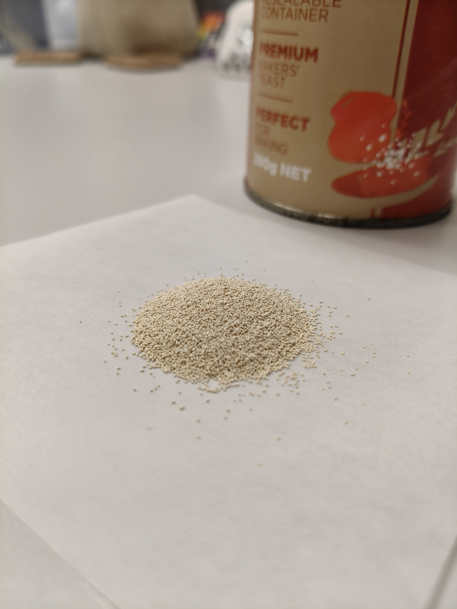
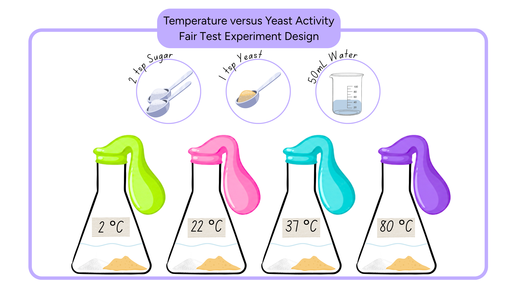

Using a Table to Record Data for a Fair Test - Part A
Scientists organise results in data tables so that measurements are clear, consistent and easy to compare.
📄
Download worksheet
Learning objective
We are learning how to collect and organise data into a table.
Success criteria
- I can label a table with variables and units in the correct format.
- I can collect data and enter it into a table with the correct units.
- I can summarise the results of an experiment using averages.
Think like a scientist
Recording Data in Scientific Tables
When scientists carry out fair tests, they use tables to record data. This helps them to see patterns, trends, and relationships in the data.
Is Yeast Alive?



Completed — next activity unlocked.
Identify Variables in the Yeast Fair Test Experiment
A student set up a fair test as seen in the image below. They wrote a testable question.
Then the student wrote a reasoned prediction:

Identify the variables in this yeast fair test.
How does changing temperature affect the amount of gas made by yeast?
Look at the image for the fair test experiment. It is Identify Variables in the Yeast Fair Test Experiment. As yeast activity increases, the amount of gas it produces increases.
How will they measure the amount of gas produced?
Completed — next activity unlocked.
How to make a scientific table
Scientists have a format they use to make a scientific table to record data. Watch the video to learn how they do this.
Use this template as a guide when you build your own data tables during the lesson.
Independent variable
What you change.
Dependent variable
What you measure or observe.
Units
The unit belongs in the heading, not in each cell.
| Independent variable (units) | Dependent variable (units) | ||
|---|---|---|---|
| Test 1 | Test 2 | Test 3 | |
| Condition 1 | Data | Data | Data |
| Condition 2 | Data | Data | Data |
| Condition 3 | Data | Data | Data |
Completed — next activity unlocked.
Build and Complete the Yeast Data Table
Make a scientific table for the yeast fair test.
Drag and drop the labels into the correct cells on the table.
Record the results
Watch each repeat test
Watch each video and enter the balloon circumference measurements into the correct column of your table.
Look at the data in the table below.
Are there any strange or unusual results when you compare Test 1, Test 2 and Test 3?
Think about why repeated results might sometimes be different.
Calculate the average results
Calculate the average results for the three tests of each temperature in the yeast fair test experiment.
You can try working out the averages yourself or use the calculate button in the table above.
Worked example — 22°C
Calculating the average size of the balloon circumference at 22°C:
| Drop label | Drop label | |||
|---|---|---|---|---|
| Drop label | Drop label | Drop label | Average | |
| Drop label | ||||
| Drop label | ||||
| Drop label | ||||
| Drop label | ||||
Interpret the results
Reasoned prediction
As the temperature increases, the amount of gas made by yeast increases. This is because living things need to be warm to survive.
Use the data to describe the results
As the temperature increases from 2°C to 37°C, the amount of gas made by yeast:
At 80°C, the amount of gas made compared with 37°C:
Do the results support the reasoned prediction?
From 2°C to 37°C, yeast activity increased and the balloons became bigger.
Why do you think yeast activity was so low in the test at 80°C?
Completed — next activity unlocked.